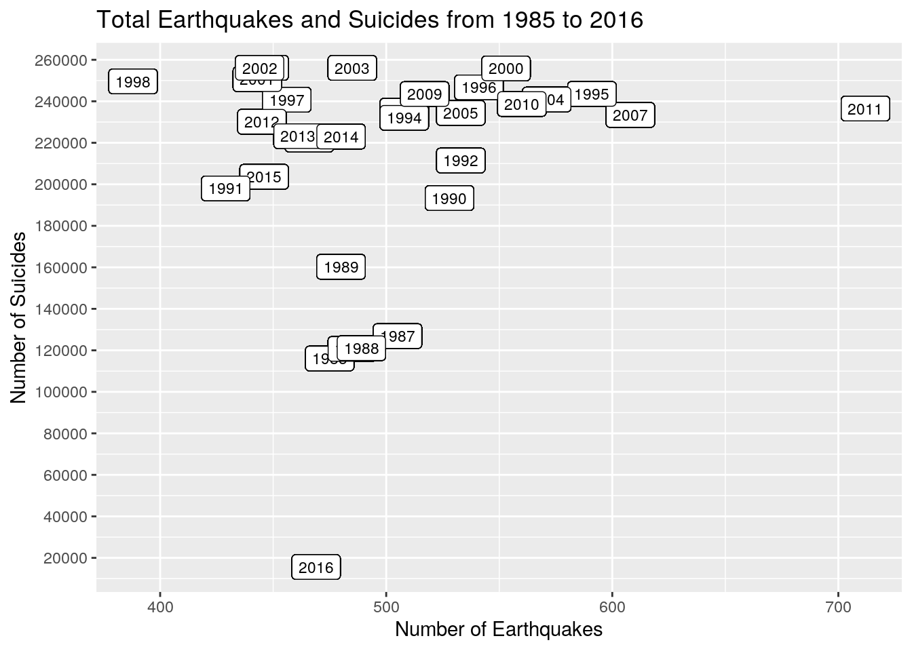
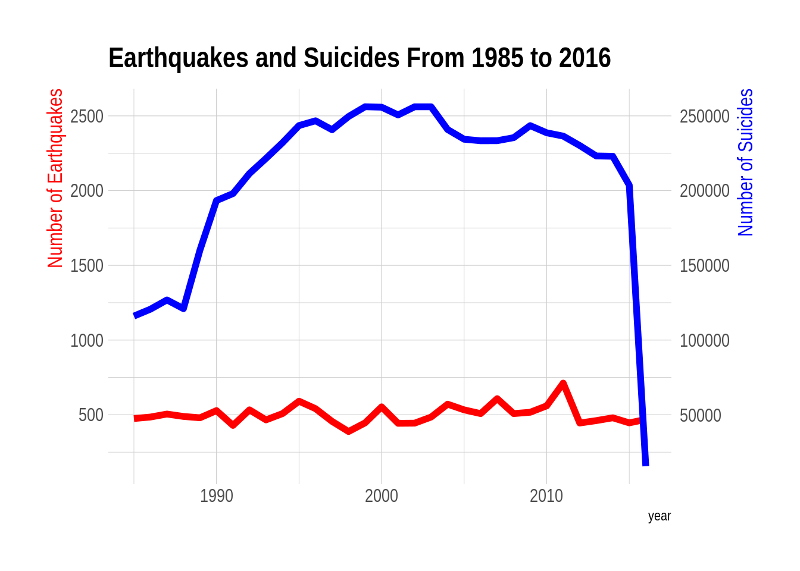
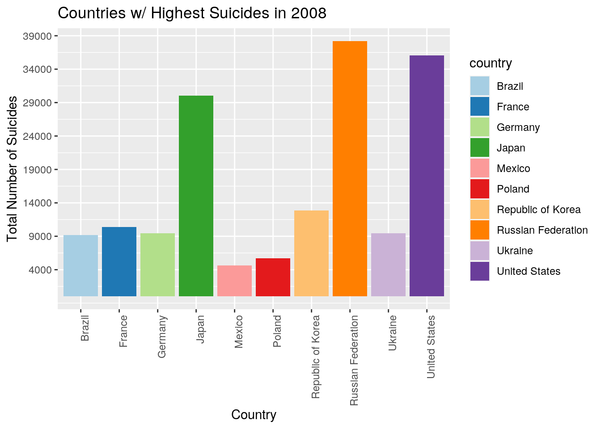
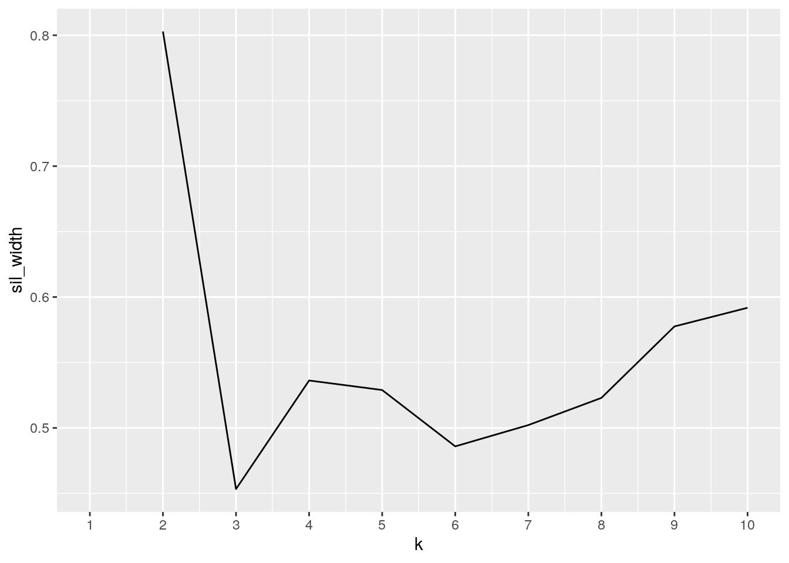
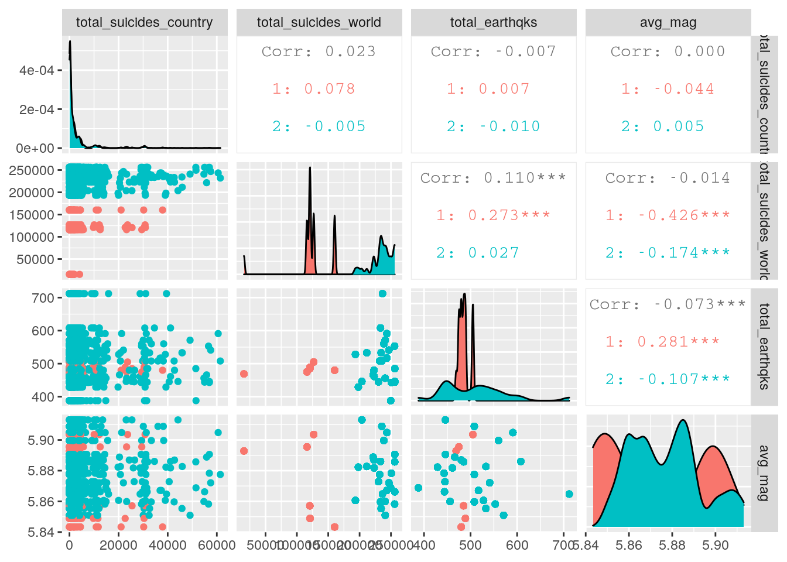

#nrow(earthqks_try) # 23412 rows
#ncol(earthqks_try) #21 columns
#nrow(suicides_try) #27820 rows
#ncol(suicides_try) #12 columns
#earthquake wrangling
earthqks_try %>% separate(Date,into=c("day", "month", "year")) -> earthqks_j
head(earthqks_j)## day month year Time Latitude Longitude Type Depth Depth.Error
## 1 1 2 1965 13:44:18 19.246 145.616 Earthquake 131.6 NA
## 2 1 4 1965 11:29:49 1.863 127.352 Earthquake 80.0 NA
## 3 1 5 1965 18:05:58 -20.579 -173.972 Earthquake 20.0 NA
## 4 1 8 1965 18:49:43 -59.076 -23.557 Earthquake 15.0 NA
## 5 1 9 1965 13:32:50 11.938 126.427 Earthquake 15.0 NA
## 6 1 10 1965 13:36:32 -13.405 166.629 Earthquake 35.0 NA
## Depth.Seismic.Stations Magnitude Magnitude.Type Magnitude.Error
## 1 NA 6.0 MW NA
## 2 NA 5.8 MW NA
## 3 NA 6.2 MW NA
## 4 NA 5.8 MW NA
## 5 NA 5.8 MW NA
## 6 NA 6.7 MW NA
## Magnitude.Seismic.Stations Azimuthal.Gap Horizontal.Distance Horizontal.Error
## 1 NA NA NA NA
## 2 NA NA NA NA
## 3 NA NA NA NA
## 4 NA NA NA NA
## 5 NA NA NA NA
## 6 NA NA NA NA
## Root.Mean.Square ID Source Location.Source Magnitude.Source
## 1 NA ISCGEM860706 ISCGEM ISCGEM ISCGEM
## 2 NA ISCGEM860737 ISCGEM ISCGEM ISCGEM
## 3 NA ISCGEM860762 ISCGEM ISCGEM ISCGEM
## 4 NA ISCGEM860856 ISCGEM ISCGEM ISCGEM
## 5 NA ISCGEM860890 ISCGEM ISCGEM ISCGEM
## 6 NA ISCGEM860922 ISCGEM ISCGEM ISCGEM
## Status
## 1 Automatic
## 2 Automatic
## 3 Automatic
## 4 Automatic
## 5 Automatic
## 6 Automaticearthqks_j %>% group_by(year) %>% summarize(avg_mag = mean(Magnitude, na.rm=T), total_earthqks = n_distinct(ID)) -> earthqks_join## `summarise()` ungrouping output (override with `.groups` argument)earthqks_join%>% na.omit %>% mutate_if(is.character, as.double)-> earthqks_join_true
earthqks_join_true %>% mutate_if(is.integer, as.double) -> earthqks_join_true
head(earthqks_join_true)## # A tibble: 6 x 3
## year avg_mag total_earthqks
## <dbl> <dbl> <dbl>
## 1 NA 5.8 1
## 2 1965 6.01 339
## 3 1966 6.04 234
## 4 1967 6.00 255
## 5 1968 6.08 305
## 6 1969 6.01 323earthqks_join_true %>% filter(year > 1984) -> earthqks_join_true2
#suicide wrangling
suicides_try %>% select(suicides_no, year, country) %>% group_by(country,year) %>% summarize(total_suicides_country = sum(suicides_no)) -> suicides_join #the wrangled suicides dataset i want to use in my join## `summarise()` regrouping output by 'country' (override with `.groups` argument)#join datasets:
full_join(suicides_join, earthqks_join_true2) -> joined## Joining, by = "year"head(joined)## # A tibble: 6 x 5
## # Groups: country [1]
## country year total_suicides_country avg_mag total_earthqks
## <fct> <dbl> <int> <dbl> <dbl>
## 1 Albania 1987 73 5.90 505
## 2 Albania 1988 63 5.85 489
## 3 Albania 1989 68 5.84 480
## 4 Albania 1992 47 5.88 533
## 5 Albania 1993 73 5.89 466
## 6 Albania 1994 50 5.88 508#nrow(joined) #2321 rows
#ncol(joined) #5 columns#pivotting demonstration with new our variables:
joined %>% pivot_longer(contains("_")) -> pivotlong_ex
head(pivotlong_ex)## # A tibble: 6 x 4
## # Groups: country [1]
## country year name value
## <fct> <dbl> <chr> <dbl>
## 1 Albania 1987 total_suicides_country 73
## 2 Albania 1987 avg_mag 5.90
## 3 Albania 1987 total_earthqks 505
## 4 Albania 1988 total_suicides_country 63
## 5 Albania 1988 avg_mag 5.85
## 6 Albania 1988 total_earthqks 489pivotlong_ex%>% pivot_wider(names_from="name", values_from="value")->pivotwide_ex
head(pivotwide_ex)## # A tibble: 6 x 5
## # Groups: country [1]
## country year total_suicides_country avg_mag total_earthqks
## <fct> <dbl> <dbl> <dbl> <dbl>
## 1 Albania 1987 73 5.90 505
## 2 Albania 1988 63 5.85 489
## 3 Albania 1989 68 5.84 480
## 4 Albania 1992 47 5.88 533
## 5 Albania 1993 73 5.89 466
## 6 Albania 1994 50 5.88 508joined %>% group_by(year) %>% mutate(total_suicides_world= sum(total_suicides_country)) -> joined1 #added total suicides around the world for each year as a new variable
head(joined1)## # A tibble: 6 x 6
## # Groups: year [6]
## country year total_suicides_count… avg_mag total_earthqks total_suicides_wor…
## <fct> <dbl> <int> <dbl> <dbl> <int>
## 1 Albania 1987 73 5.90 505 126842
## 2 Albania 1988 63 5.85 489 121026
## 3 Albania 1989 68 5.84 480 160244
## 4 Albania 1992 47 5.88 533 211473
## 5 Albania 1993 73 5.89 466 221565
## 6 Albania 1994 50 5.88 508 232063joined1 %>% arrange(desc(total_suicides_country))%>% select(total_suicides_country, country) #shows country with greatest amount of suicides overall## Adding missing grouping variables: `year`## # A tibble: 2,321 x 3
## # Groups: year [32]
## year total_suicides_country country
## <dbl> <int> <fct>
## 1 1994 61420 Russian Federation
## 2 1995 60548 Russian Federation
## 3 1996 57511 Russian Federation
## 4 1999 56974 Russian Federation
## 5 2001 56958 Russian Federation
## 6 2000 56619 Russian Federation
## 7 1993 55846 Russian Federation
## 8 2002 55024 Russian Federation
## 9 1997 54746 Russian Federation
## 10 1998 51518 Russian Federation
## # … with 2,311 more rowsjoined1 %>% group_by(country) %>% summarize(total_suicides = sum(total_suicides_country), minimum_suicides = min(total_suicides_country), maximum_suicides=max(total_suicides_country)) #RStandard deviation, minimum, and maximum total suicides for each country## `summarise()` ungrouping output (override with `.groups` argument)## # A tibble: 101 x 4
## country total_suicides minimum_suicides maximum_suicides
## <fct> <int> <int> <int>
## 1 Albania 1970 0 170
## 2 Antigua and Barbuda 11 0 2
## 3 Argentina 82219 1951 3289
## 4 Armenia 1905 53 130
## 5 Aruba 101 2 10
## 6 Australia 70111 1861 3027
## 7 Austria 50073 1201 2139
## 8 Azerbaijan 1656 47 317
## 9 Bahamas 93 1 11
## 10 Bahrain 463 0 43
## # … with 91 more rowsjoined%>%summarize(n_distinct(country))%>% nrow() #101 distinct countries in dataset## `summarise()` ungrouping output (override with `.groups` argument)## [1] 101joined1%>% ungroup() %>% na.omit %>% select_if(is.numeric) %>% summarize(cor(total_earthqks, total_suicides_world)) #computed correlation between avg magnitudes and number of suicides in the world from 1985 to 2016## # A tibble: 1 x 1
## `cor(total_earthqks, total_suicides_world)`
## <dbl>
## 1 0.110joined%>%na.omit %>% select_if(is.numeric) %>% summarize(cor(total_earthqks, total_suicides_country)) #correlation between total earthquakes and number of suicides in each country## `summarise()` ungrouping output (override with `.groups` argument)## # A tibble: 101 x 2
## country `cor(total_earthqks, total_suicides_country)`
## <fct> <dbl>
## 1 Albania -0.292
## 2 Antigua and Barbuda 0.259
## 3 Argentina 0.111
## 4 Armenia 0.164
## 5 Aruba 0.326
## 6 Australia -0.257
## 7 Austria -0.127
## 8 Azerbaijan -0.300
## 9 Bahamas 0.175
## 10 Bahrain 0.436
## # … with 91 more rows#plot 1:
ggplot(data = joined1, aes(x = total_earthqks , y = total_suicides_world)) + geom_point() + ggtitle("Total Earthquakes and Suicides from 1985 to 2016") + geom_label(aes(x=total_earthqks,y=total_suicides_world,label= year), size = 3) + labs(y= "Number of Suicides", x = "Number of Earthquakes") + theme(legend.position = "none") + scale_y_continuous(breaks=seq(0,260000,20000))
# joined plot 2
ggplot(joined1, aes(x=year)) +
geom_line( aes(y=total_earthqks), size=2, color="red") +
geom_line( aes(y=total_suicides_world / 100), size=2, color="blue") +
scale_y_continuous(
# Features of the first axis
name = "Number of Earthquakes",
# Add a second axis and specify its features
sec.axis = sec_axis(~.*100, name="Number of Suicides")
) +
theme_ipsum() +
theme(
axis.title.y = element_text(color = "red", size=13),
axis.title.y.right = element_text(color = "blue", size=13)
) +
ggtitle("Earthquakes and Suicides From 1985 to 2016")
#plot3
joined1 %>% group_by(country)%>% arrange(desc(total_suicides_country)) %>% filter(year==2008) -> top_ten
top_ten %>%as.data.frame()-> top_ten1
top_ten1%>% slice(1:10)-> top_ten2
ggplot(top_ten2,aes(country,total_suicides_country, fill=country))+labs(x="Country", y="Total Number of Suicides", title= "Countries w/ Highest Suicides in 2008") + geom_bar(stat="summary") +scale_y_continuous( breaks=seq(4000, 40000, by=5000)) + geom_errorbar(stat="summary", width=0.5)+ scale_fill_brewer(palette= "Paired") +
theme(axis.text.x = element_text(angle = 90, hjust = 1))## No summary function supplied, defaulting to `mean_se()`
## No summary function supplied, defaulting to `mean_se()`
library(tidyverse)
library(cluster)
#install.packages("GGally")
library(GGally)## Registered S3 method overwritten by 'GGally':
## method from
## +.gg ggplot2join_dat<-joined1 %>% ungroup() %>% select(total_suicides_country,total_suicides_world,total_earthqks, avg_mag)
sil_width<-vector()
for(i in 2:10){
pot_fit <- pam(join_dat, k = i)
sil_width[i] <- pot_fit$silinfo$avg.width
}
joined1 %>% ungroup%>%select(total_suicides_country,total_suicides_world,total_earthqks,avg_mag) %>% scale %>% pam(k=2) -> pam_cluster
ggplot()+geom_line(aes(x=1:10,y=sil_width))+scale_x_continuous(name="k",breaks=1:10)# 2 on the graph is the highest and therefore the best, tightest cluster!
pam_cluster$silinfo$avg.width #avg width is 0.41 (weak/artificial)## [1] 0.4138423joined1%>%ungroup%>% mutate(cluster=as.factor(pam_cluster$clustering)) %>% ggpairs(columns = c("total_suicides_country","total_suicides_world","total_earthqks","avg_mag"), aes(color=cluster)) 